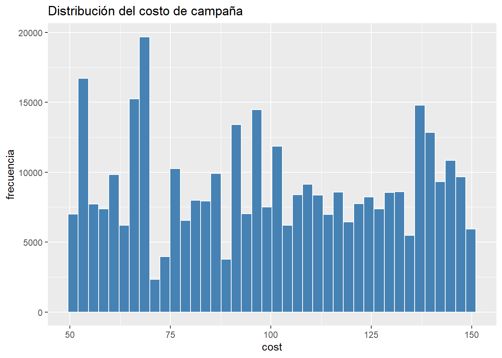
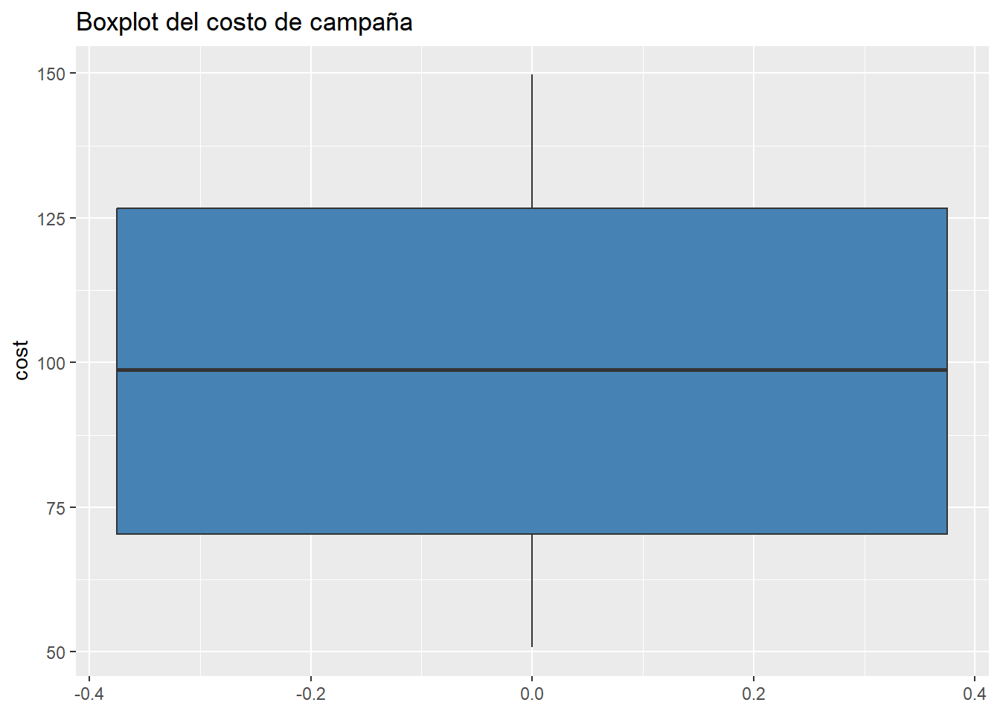
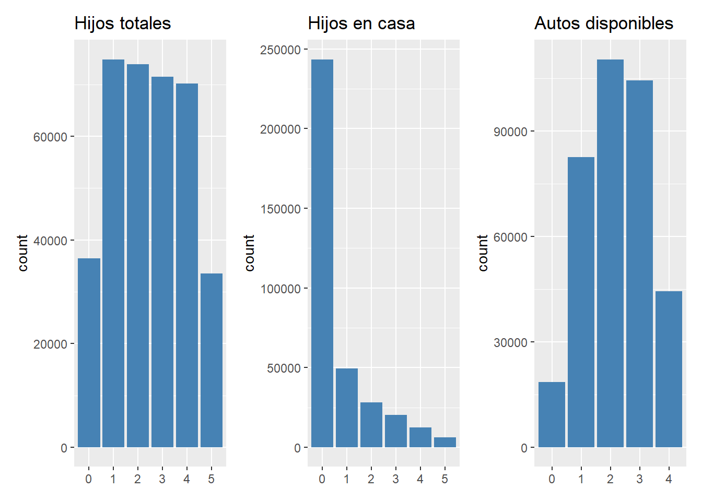
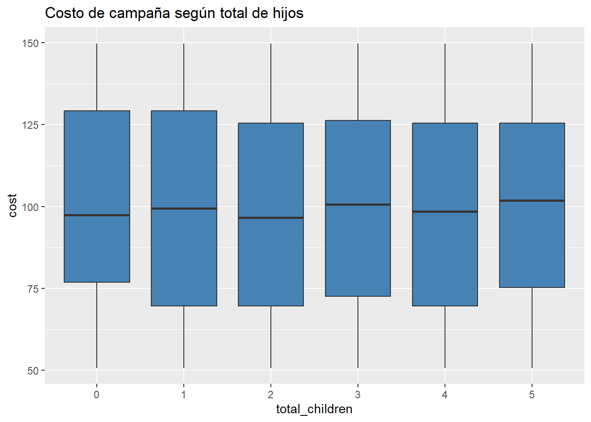
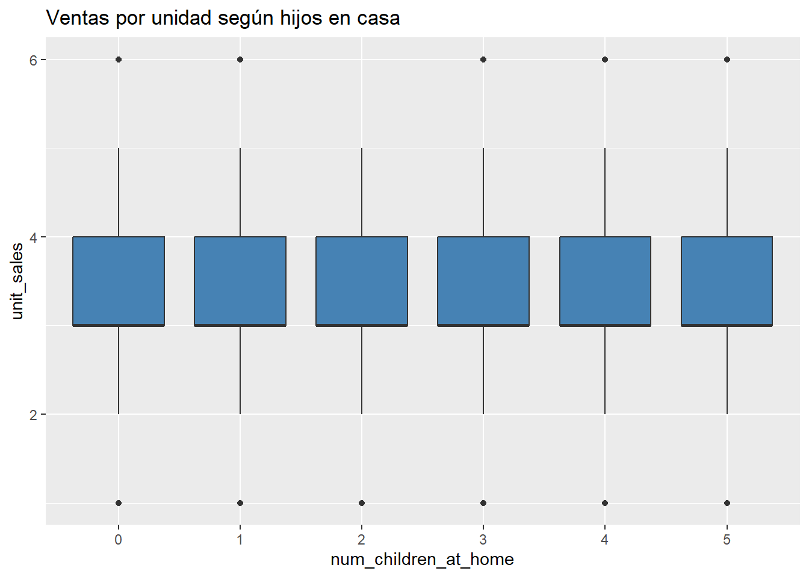
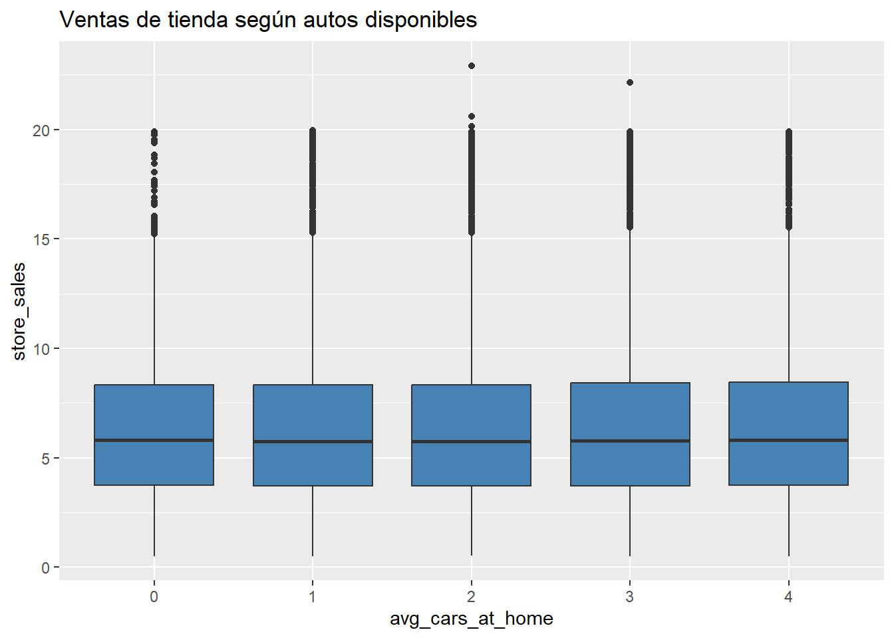
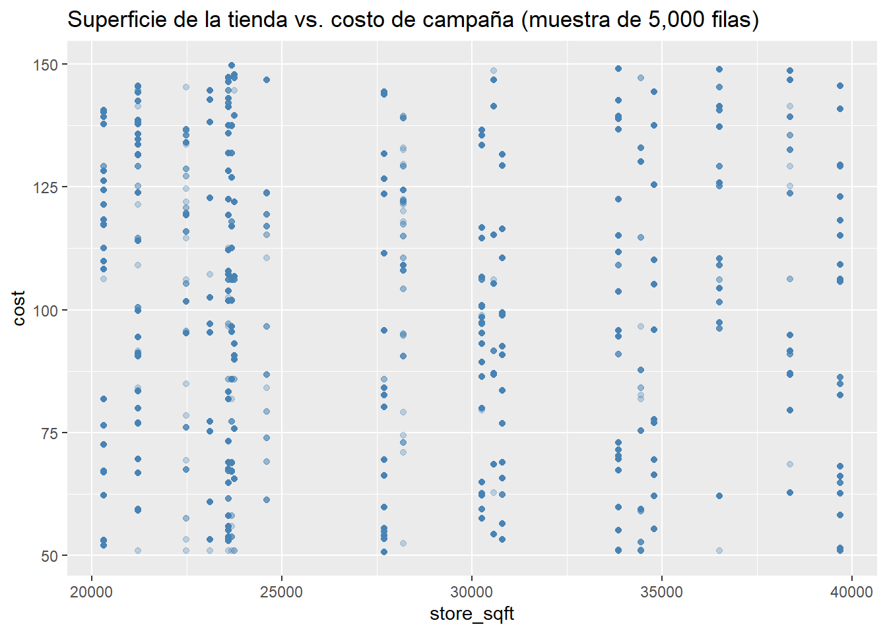

Capitulo 1 Análisis exploratorio de datos (EDA)
Este capítulo desarrolla el análisis exploratorio de datos (EDA) sobre el dataset de campañas de mercadeo en tiendas. El objetivo del EDA es entender la forma, calidad y relaciones de las variables antes de pasar a las pruebas de hipótesis: si hay datos faltantes, cómo se distribuyen cost, unit_sales y store_sales, y cómo se relacionan estas con el perfil del hogar (total_children, num_children_at_home, avg_cars_at home(approx).1).
1.1 Preparación de los datos
1.1.2 Cargar los datos
Usamos read_csv() (en vez de read.csv()) para que los nombres de columna con espacios y paréntesis, como avg_cars_at home(approx).1, se conserven tal cual y podamos referirnos a ellos con comillas invertidas.
1.1.3 Primer vistazo a los datos
Muéstrame las 5 primeras filas
## # A tibble: 5 × 17
## id `store_sales(in millions)` `unit_sales(in millions)` total_children
## <dbl> <dbl> <dbl> <dbl>
## 1 0 8.61 3 2
## 2 1 5 2 4
## 3 2 14.1 4 0
## 4 3 4.02 3 5
## 5 4 2.13 3 5
## # ℹ 13 more variables: num_children_at_home <dbl>,
## # `avg_cars_at home(approx).1` <dbl>, gross_weight <dbl>,
## # recyclable_package <dbl>, low_fat <dbl>, units_per_case <dbl>,
## # store_sqft <dbl>, coffee_bar <dbl>, video_store <dbl>, salad_bar <dbl>,
## # prepared_food <dbl>, florist <dbl>, cost <dbl>La estructura de los datos
## spc_tbl_ [360,336 × 17] (S3: spec_tbl_df/tbl_df/tbl/data.frame)
## $ id : num [1:360336] 0 1 2 3 4 5 6 7 8 9 ...
## $ store_sales(in millions) : num [1:360336] 8.61 5 14.08 4.02 2.13 ...
## $ unit_sales(in millions) : num [1:360336] 3 2 4 3 3 4 2 3 3 4 ...
## $ total_children : num [1:360336] 2 4 0 5 5 5 1 2 5 1 ...
## $ num_children_at_home : num [1:360336] 2 0 0 0 0 5 0 0 0 0 ...
## $ avg_cars_at home(approx).1: num [1:360336] 2 3 3 0 3 3 2 2 2 3 ...
## $ gross_weight : num [1:360336] 10.3 6.66 21.3 14.8 17 7.26 9.58 16.9 13.8 15.7 ...
## $ recyclable_package : num [1:360336] 1 1 1 0 1 0 0 1 1 1 ...
## $ low_fat : num [1:360336] 0 0 0 1 1 1 0 0 0 1 ...
## $ units_per_case : num [1:360336] 32 1 26 36 20 5 6 2 6 9 ...
## $ store_sqft : num [1:360336] 36509 28206 21215 21215 27694 ...
## $ coffee_bar : num [1:360336] 0 1 1 1 1 1 1 1 0 1 ...
## $ video_store : num [1:360336] 0 0 0 0 1 0 1 1 0 1 ...
## $ salad_bar : num [1:360336] 0 0 0 0 1 1 1 1 0 1 ...
## $ prepared_food : num [1:360336] 0 0 0 0 1 1 1 1 0 1 ...
## $ florist : num [1:360336] 0 0 0 0 1 1 1 1 0 1 ...
## $ cost : num [1:360336] 62.1 121.8 83.5 66.8 111.5 ...
## - attr(*, "spec")=
## .. cols(
## .. id = col_double(),
## .. `store_sales(in millions)` = col_double(),
## .. `unit_sales(in millions)` = col_double(),
## .. total_children = col_double(),
## .. num_children_at_home = col_double(),
## .. `avg_cars_at home(approx).1` = col_double(),
## .. gross_weight = col_double(),
## .. recyclable_package = col_double(),
## .. low_fat = col_double(),
## .. units_per_case = col_double(),
## .. store_sqft = col_double(),
## .. coffee_bar = col_double(),
## .. video_store = col_double(),
## .. salad_bar = col_double(),
## .. prepared_food = col_double(),
## .. florist = col_double(),
## .. cost = col_double()
## .. )
## - attr(*, "problems")=<externalptr>El dataset contiene 360.336 observaciones y 17 variables, todas leídas por R como tipo num. Sin embargo, esto no refleja la naturaleza real de cada una: store_sales, unit_sales, gross_weight, store_sqft, cost y units_per_case sí corresponden a variables continuas; id, total_children, num_children_at_home y avg_cars_at home(approx).1 son numéricas discretas (conteos); mientras que recyclable_package, low_fat, coffee_bar, video_store, salad_bar, prepared_food y florist son en realidad variables binarias (0/1) que deben tratarse como factor antes de emplearse en análisis categóricos.
1.1.4 Datos faltantes
Veamos si hay datos faltantes
## # A tibble: 1 × 17
## NA_id `NA_store_sales(in millions)` NA_unit_sales(in milli…¹ NA_total_children
## <int> <int> <int> <int>
## 1 0 0 0 0
## # ℹ abbreviated name: ¹`NA_unit_sales(in millions)`
## # ℹ 13 more variables: NA_num_children_at_home <int>,
## # `NA_avg_cars_at home(approx).1` <int>, NA_gross_weight <int>,
## # NA_recyclable_package <int>, NA_low_fat <int>, NA_units_per_case <int>,
## # NA_store_sqft <int>, NA_coffee_bar <int>, NA_video_store <int>,
## # NA_salad_bar <int>, NA_prepared_food <int>, NA_florist <int>, NA_cost <int>Al revisar las 17 columnas del dataset, ninguna presenta valores faltantes: todas las variables (id, store_sales, unit_sales, total_children, num_children_at_home, avg_cars_at home(approx).1, gross_weight, recyclable_package, low_fat, units_per_case, store_sqft, coffee_bar, video_store, salad_bar, prepared_food, florist y cost) tienen 0 NA.
1.2 Análisis univariado de la variable de costo (cost)
La variable cost es el costo de la campaña de mercadeo asociado a cada combinación tienda-producto-hogar. Es la primera variable de interés porque conecta directamente el perfil del hogar con el gasto en mercadeo.
1.2.1 Estadísticos descriptivos
Realicemos el resumen estadístico de la variable
data %>% summarise(n = length(cost),
media = mean(cost),
sd = sd(cost),
mediana = median(cost),
RIC = IQR(cost),
Q1 = quantile(cost, 0.25),
Q3 = quantile(cost, 0.75),
minimo = min(cost),
maximo = max(cost),
asimetria = skewness(cost),
curtosis = kurtosis(cost))## # A tibble: 1 × 11
## n media sd mediana RIC Q1 Q3 minimo maximo asimetria curtosis
## <int> <dbl> <dbl> <dbl> <dbl> <dbl> <dbl> <dbl> <dbl> <dbl> <dbl>
## 1 360336 99.6 29.9 98.8 56.3 70.3 127. 50.8 150. 0.0191 1.74El coeficiente de asimetría de cost es 0,01913213, valor cercano a 0 que confirma una distribución prácticamente simétrica, consistente con la cercanía entre media (99,61) y mediana (98,81). La curtosis es 1,736699, por debajo del valor de referencia de 3 para una distribución normal, lo que indica una distribución platicúrtica (más achatada, con colas más ligeras), coherente con el rango acotado de la variable (50,79 a 149,75). En conjunto, cost presenta una distribución simétrica y ligeramente más plana que la normal, sin sesgos importantes.
1.2.2 Distribución (histograma)
ggplot(data, aes(x = cost)) +
geom_histogram(bins = 40, fill = "steelblue", color = "white") +
labs(title = "Distribución del costo de campaña", x = "cost", y = "frecuencia")
El histograma de cost muestra una distribución multimodal, con al menos 4-5 zonas de mayor concentración (alrededor de 55-58, 65-68, 88-95, 110-115 y 135-140), separadas por valles de menor frecuencia. Esto contrasta con la lectura obtenida a partir de la asimetría (0,019) y la curtosis (1,74), que describían una forma global simétrica y platicúrtica, pero no captan la presencia de estas múltiples modas. La coexistencia de estos picos sugiere posibles subgrupos subyacentes en los datos (por ejemplo, distintos rangos de precio asociados a tipos de producto o promoción) que no se reflejan en las medidas de forma agregadas.
1.2.3 Boxplot
ggplot(data, aes(y = cost)) +
geom_boxplot(fill = "steelblue") +
labs(title = "Boxplot del costo de campaña")
El diagrama de cajas y bigotes de cost muestra una caja bastante simétrica: la mediana (línea dentro de la caja) se ubica cerca de 98,81, con Q1 ≈ 70,32 y Q3 ≈ 126,62, valores que coinciden con el resumen numérico calculado antes. Los bigotes se extienden desde aproximadamente el mínimo (50,79) hasta el máximo (149,75). No se observan puntos individuales fuera de los bigotes, es decir, no hay valores atípicos. Esto es coherente con lo que ya se había notado en el histograma: aunque la distribución es multimodal (con varios picos), no tiene colas largas ni valores extremos aislados, sino que todos los datos se concentran dentro de un rango relativamente acotado (50-150), lo cual también es consistente con la curtosis platicúrtica (1,74) observada anteriormente, que indicaba precisamente la ausencia de colas pesadas.
1.3 Análisis univariado de las variables de ventas
1.3.1 Estadísticos descriptivos
data %>% summarise(across(c(`unit_sales(in millions)`, `store_sales(in millions)`),
list(media = mean, sd = sd, mediana = median,
min = min, max = max)))## # A tibble: 1 × 10
## `unit_sales(in millions)_media` unit_sales(in million…¹ unit_sales(in millio…²
## <dbl> <dbl> <dbl>
## 1 3.04 0.785 3
## # ℹ abbreviated names: ¹`unit_sales(in millions)_sd`,
## # ²`unit_sales(in millions)_mediana`
## # ℹ 7 more variables: `unit_sales(in millions)_min` <dbl>,
## # `unit_sales(in millions)_max` <dbl>,
## # `store_sales(in millions)_media` <dbl>,
## # `store_sales(in millions)_sd` <dbl>,
## # `store_sales(in millions)_mediana` <dbl>, …unit_sales tiene una media de 3,043881 (sd = 0,7846759, mediana = 3), con rango entre 1 y 6. store_sales tiene una media de 6,337376 (sd = 3,30798, mediana = 5,78), con rango entre 0,51 y 22,92. Dado que ambas variables tienen escalas distintas, se comparó su dispersión relativa mediante el coeficiente de variación (CV = sd/media): unit_sales presenta un CV ≈ 25,8%, mientras que store_sales presenta un CV ≈ 52,2%. Esto indica que, en términos relativos, store_sales es proporcionalmente más variable que unit_sales, aun cuando su desviación estándar absoluta también es mayor en escala.
1.4 Análisis univariado del perfil del hogar
1.4.1 Tabla de frecuencias
## # A tibble: 6 × 2
## total_children_f n
## <fct> <int>
## 1 0 36441
## 2 1 74857
## 3 2 73902
## 4 3 71524
## 5 4 70134
## 6 5 33478## # A tibble: 6 × 2
## num_children_at_home_f n
## <fct> <int>
## 1 0 243555
## 2 1 49427
## 3 2 28163
## 4 3 20382
## 5 4 12532
## 6 5 6277## # A tibble: 5 × 2
## avg_cars_f n
## <fct> <int>
## 1 0 18537
## 2 1 82619
## 3 2 110401
## 4 3 104424
## 5 4 44355total_children_f presenta una distribución relativamente uniforme entre 1 y 4 hijos (“1” con 74.857 casos, “2” con 73.902, “3” con 71.524), con una caída notoria en las categorías extremas “0” (36.441) y “5” (33.478), aproximadamente la mitad de frecuencia que las intermedias. num_children_at_home_f presenta un patrón distinto: la categoría “0” domina con 243.555 casos (67,6% del total), seguida de “1” (49.427), y las categorías restantes decrecen progresivamente hasta 6.277 casos en “5”. Esto confirma que la mayoría de los hogares no tiene hijos actualmente viviendo en casa.
1.4.2 Gráficos de barras
p1 <- ggplot(data, aes(x = total_children_f)) +
geom_bar(fill = "steelblue") + labs(title = "Hijos totales", x = NULL)
p2 <- ggplot(data, aes(x = num_children_at_home_f)) +
geom_bar(fill = "steelblue") + labs(title = "Hijos en casa", x = NULL)
p3 <- ggplot(data, aes(x = avg_cars_f)) +
geom_bar(fill = "steelblue") + labs(title = "Autos disponibles", x = NULL)
p1 + p2 + p3
El gráfico de barras muestra la distribución de las tres variables del perfil del hogar. total_children presenta una forma relativamente uniforme entre 1 y 4 hijos, con una caída marcada en los extremos (0 y 5). num_children_at_home muestra un patrón muy distinto: la barra de “0” domina ampliamente sobre el resto, que decrece de forma progresiva hasta “5”. avg_cars_at_home se concentra principalmente en “2” y “3” autos, con “0” y “4” como las categorías menos frecuentes.
1.5 Análisis bivariado: perfil del hogar vs. costo y ventas
1.5.1 Costo según número de hijos totales
ggplot(data, aes(x = total_children_f, y = cost)) +
geom_boxplot(fill = "steelblue") +
labs(title = "Costo de campaña según total de hijos", x = "total_children", y = "cost")
El boxplot de cost según total_children muestra medianas muy similares en los 6 grupos (alrededor de 97-102), sin un patrón asociado al número de hijos, y cajas y bigotes prácticamente superpuestos entre categorías. Esto anticipa lo confirmado más adelante con el ANOVA: aunque la prueba F resultó estadísticamente significativa (dado el tamaño de muestra), el tamaño del efecto (eta cuadrado = 0,000977) fue negligible, es decir, total_children prácticamente no tiene poder explicativo sobre cost.
1.5.2 Ventas por unidad según hijos en casa
ggplot(data, aes(x = num_children_at_home_f, y = `unit_sales(in millions)`)) +
geom_boxplot(fill = "steelblue") +
labs(title = "Ventas por unidad según hijos en casa",
x = "num_children_at_home", y = "unit_sales")
El boxplot de unit_sales según num_children_at_home muestra las 6 categorías prácticamente idénticas: misma mediana (4), mismo rango intercuartílico (≈3-4) y mismos bigotes (2-5), con valores atípicos en 1 y 6 en todos los grupos por igual. No se observan diferencias notorias entre grupos, lo que sugiere que num_children_at_home probablemente no tiene relación con unit_sales.
1.5.3 Ventas de tienda según autos disponibles
ggplot(data, aes(x = avg_cars_f, y = `store_sales(in millions)`)) +
geom_boxplot(fill = "steelblue") +
labs(title = "Ventas de tienda según autos disponibles",
x = "avg_cars_at_home", y = "store_sales")
El boxplot de store_sales según avg_cars_at_home muestra las 5 categorías (0 a 4 autos) muy parecidas entre sí: mediana ≈5,5-6, rango intercuartílico ≈4-8 y bigotes hasta ≈15-16, con abundantes valores atípicos por encima de ese punto en todas las categorías. No se observan diferencias notorias en tendencia central ni dispersión entre grupos, lo que sugiere que avg_cars_at_home probablemente no tiene una relación relevante con store_sales.
1.5.4 Dispersión: superficie de la tienda vs. costo
Con 360 mil filas, un scatterplot con todos los puntos es lento y poco legible, así que trabajamos con una muestra aleatoria solo para este gráfico.
set.seed(123)
data_muestra <- data %>% slice_sample(n = 5000) # muestra solo para graficar
ggplot(data_muestra, aes(x = store_sqft, y = cost)) +
geom_point(alpha = 0.3, color = "steelblue") +
labs(title = "Superficie de la tienda vs. costo de campaña (muestra de 5,000 filas)")
El diagrama de dispersión entre store_sqft y cost (muestra aleatoria de 5.000 filas) no muestra una relación lineal aparente: la línea de tendencia es casi plana, con pendiente ligeramente negativa. Además, los puntos se agrupan en columnas verticales bien definidas, lo que indica que store_sqft toma solo un conjunto limitado de valores discretos en lugar de variar libremente. En conjunto, esto sugiere que store_sqft no sería un buen predictor lineal de cost.